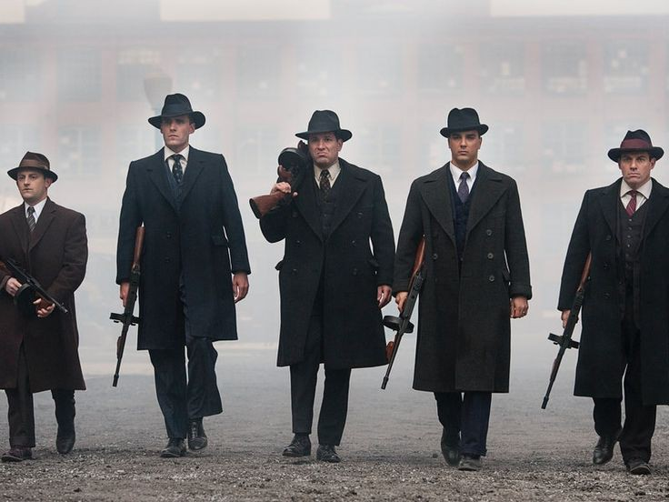
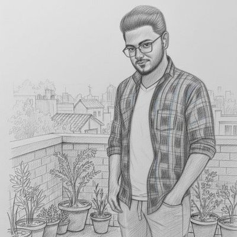
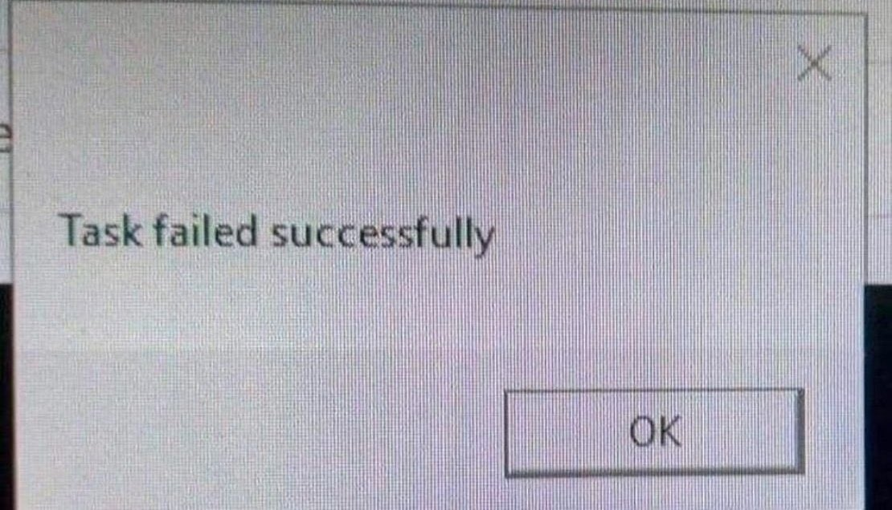
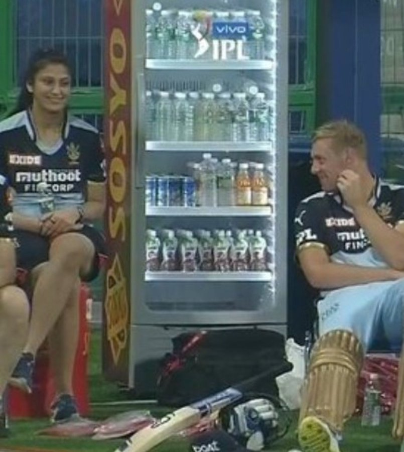

No Context Cats
@nocontextcats · 10h
Bro think he could fly 💀
chat_bubble
800
repeat
500
Favorite
2k
bar_chart
10k
Prince Jha @princejha · 1d
My friend and I preparing to meet the college management who were promising 100% placement at the time of admission

chat_bubble
50
repeat
25
Favorite
200
bar_chart
1k
Addicted To Memes
@Addictedtomemez
· 8h
College exams ka admit card lene chala gya😭😭
Academic department:
chat_bubble
150
repeat
100
Favorite
1k
bar_chart
8k

$ur∆j
@StrataMinds · 17h
This is how we can survive the college ☠️
chat_bubble
600
repeat
400
Favorite
2k
bar_chart
25k
$ur∆j
@StrataMinds · 12h
Indian parents when their child doesn't become Engineer/Doctor/CA/IAS :

chat_bubble
1k
repeat
700
Favorite
6k
bar_chart
50k
🫠
@indianmemesguy · 5h
In College Canteen,
Final year student try to impress fresher Girl :

chat_bubble
1.5k
repeat
900
Favorite
5k
bar_chart
75k
Code Meme
@CodeMeme · 6h
This is amazing coding meme

chat_bubble
2k
repeat
1k
Favorite
9k
bar_chart
100k

non aesthetic things
@PicturesFoIder · 14h
legend

chat_bubble
8k
repeat
5k
Favorite
25k
bar_chart
200k